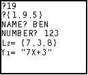
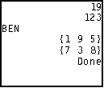
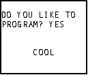
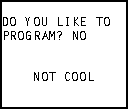
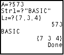

| HOME >> Tutorials >> Tutorial 5: User Input |
Introduction:
In this tutorial, we will learn how to use Prompt and Input in our programs. The two commands are very important because now the user can get involved. There aren't too many good programs out there that do not have some kind of user input, even if it's just "yes" or "no." With these two commands you can ask for numbers (real or complex), strings (text), lists, matrices, or even the Y= function.
New Commands:
| Input | Asks for a value to store into a variable |
| Prompt | Prompts user for a value to store into a variable |
| Input variable | Prompt variableA[,variableB...] |
| Input "text",variable, |
The Codes:
This first set of code shows the different ways of using Input. Please click on Input and Prompt above and read the detailed definitions of each. You need them so you will run the programs below correctly. When you put in the value for Y1, put in an expression like: 7X+3
| : | For AShell, SOS, and TI-Explorer |
| ClrHome | Clears the home screen |
| Input A:Input L1 | Asks for the values of A and LL1, and stores them |
| Input "NAME? ",Str1 | Asks for your name and then stores it into Str1 |
| Input "NUMBER? ",B | Asks for a number and then stores it into B |
| Input "L2= ",L2 | Asks for the value of L2 and stores it |
| Input "Y1= ",Y1 | Asks for the value of Y1 and stores it |
| ClrHome | Clears the home screen |
| Disp A,B,Str1,L1,L2 | Displays all the variables |
 and 
If you got an error message that says "ERR:DATA TYPE" you either forgot to put {} or "", or you did not read the further definitions of Input and Prompt like I said. Notice that the last variable the calculator displays (Y1) is probably not what you typed in. If you typed in what I suggested, you didn't get "7X+3", but just a number. This happens because when you type in the expression, the calculator evaluates it and then displays it. So if 3 is the value for X, when Y1 was displayed you would got 24 -- 7(3)+3. To see your actual expression press the Y= key and look at Y1 and you should see your expression. Next, is just a fun little program that combines the concepts from this tutorial and the previous one.
| : | For AShell, SOS, and TI-Explorer |
| ClrHome | Clears the home screen |
| Disp "","DO YOU LIKE TO" | Displays "DO YOU LIKE TO" on the second line |
| Input "PROGRAM? ",Str1 | Asks and stores it into Str1 |
| If Str1="YES":Then | If the answer is "yes", then |
| Output(6,7,"COOL") | Displays "COOL" |
| Else | If the answer isn't "yes" |
| Output(6,5,"NOT COOL") | Displays "NOT COOL" |
| End | End the If-Then-Else statement |
 or 
Wow, this was your first program that actually "thinks." It's basic, but it's the basis for all BASIC programs. Notice three things. First, see how I combined Disp with Input. On the screen, it looks all combined, but it actually isn't. An Input can't be longer than 16 characters and it's recommended that you don't go past 12 characters because you need some space for the user to input. If what the user has to input is too long, it just wraps to the next line. Second, look at the If-Then statement. I had to put "yes" inside quotation marks because whenever you using a string in a condition, you have to use "". If I didn't put quotation marks, the calculator will read it as user variable Y multiplied by user variable E multiplied by user variable S and that'll be a number. Then it'll give you and "ERR:DATA TYPE", because numbers can't be stored into strings. Third, the answer does not have to be "no" for it to display "NOT COOL." The answer just has to not be "yes." There is also another way to do this in Tutorial 9 if you want to jump ahead. The next code is on Prompt, which is fairly simple. When you are inputting text for Str1 you have to surround it with quotation marks.
| : | For AShell, SOS, and TI-Explorer |
| ClrHome | Clears the home screen |
| Prompt A,Str1,L2 | Prompts for A, Str1, and L2 |
| Disp A,Str1,L2 | Displays A, Str1, and L2 |

You could rewrite the line :Prompt A,Str1,L2 into three separate lines, but it's more compact this way. Having to put "" around the text for Str1 is one of the drawbacks of using Prompt.
Conclusion:
The Input "text",variable construction is probably used more than just Input variable because it tells the user what he/she is inputting. If all it displays is "?" how are you supposed to know what data type it is. It might be a list and you have to put {} around the number, but you don't know. Prompt can be useful if you're just asking to store a value into a variable. However, most people probably use Input over Prompt, because you can customize what is displayed with Input and you don't have to put "" around text. In the next tutorial, we'll learn branching using the Lbl and Goto commands.
If you do not understand a particular part in this lesson, have suggestions, or find any problems please contact me.
|
|
| Tutorial 4 | Tutorial 6 |